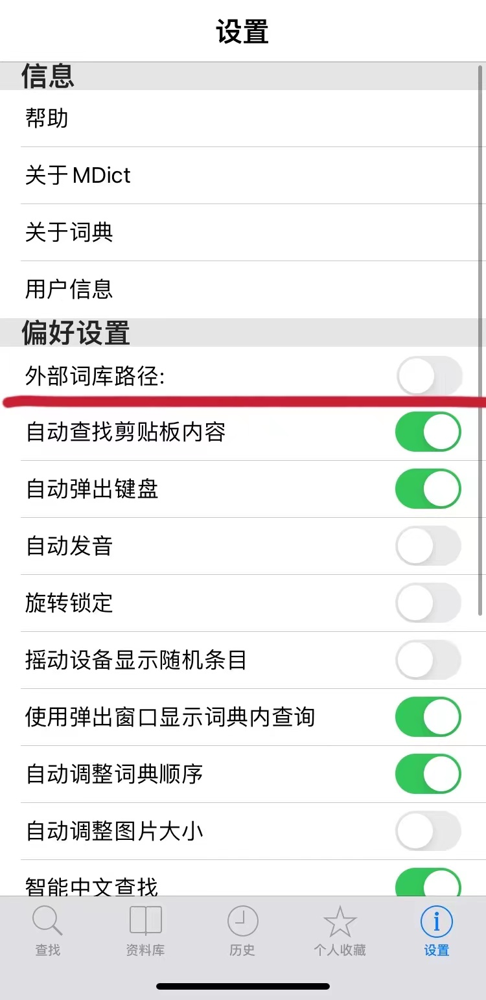
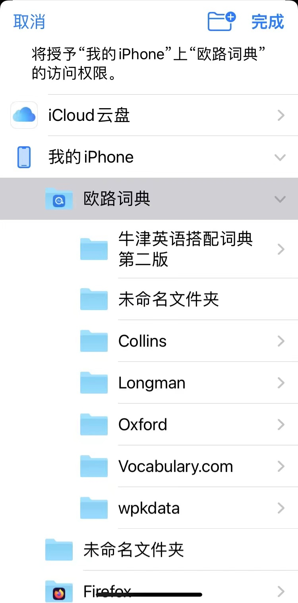
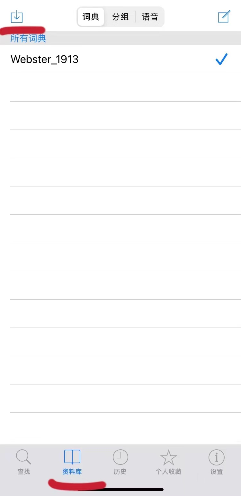
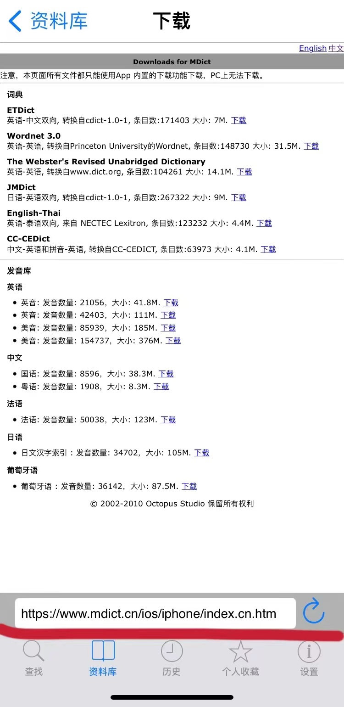
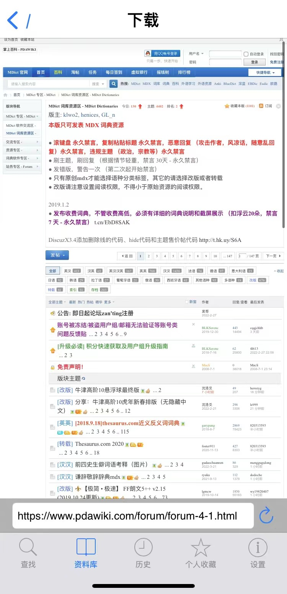

访问地址：https://www.mdict.cn/wp/?page_id=5227&lang=zh
Mdict是开源软件，可以自行编制词典，也可以下载别人编制的词典，例如Mdict词典资源库提供了很多词典资源。
补充一些词典相关知识：
（1）*.mdx是词库主文件,存放词库的词条释义文本；
（2）*.mdd是资源文件，存放词库的语音、图像等资源信息。注意这个文件有的词库没有，即带语音和图像的词库有这个文件，纯文本的词库则没有；
（3）.css是排版风格样式表文件，个别词库需要这个文件；
（4）对于同一个词库，.mdx、.mdd和.css的文件名必须相同。
有些安卓手机安装Mdict后不会生成目录，需要自行在文件管理处新建一个文件夹，命名为“mdict”；
下载mdx格式词典，有些词典会有mdx和mdd两个文件包，将词典文件放在“mdict”目录下的“doc”文件夹；
打开Mdict之后就可以开始查词。
苹果手机用户可以在Appstore下载Mdict，有两种版本供选择，含广告的免费版和不含广告的付费版（价格是25元）。
接下来以免费版为例演示词典的安装方法，有两种方式：
一种是设置外部词库路径，可以将icoud云盘、浏览器下载、别的词典软件（例如欧陆词典）的词库设置为Mdict的外部词库；


另一种是在Mdict的资料库中下载词典，默认地址是Mdict官网，也可以前往其他词典分享论坛，如图所示：


